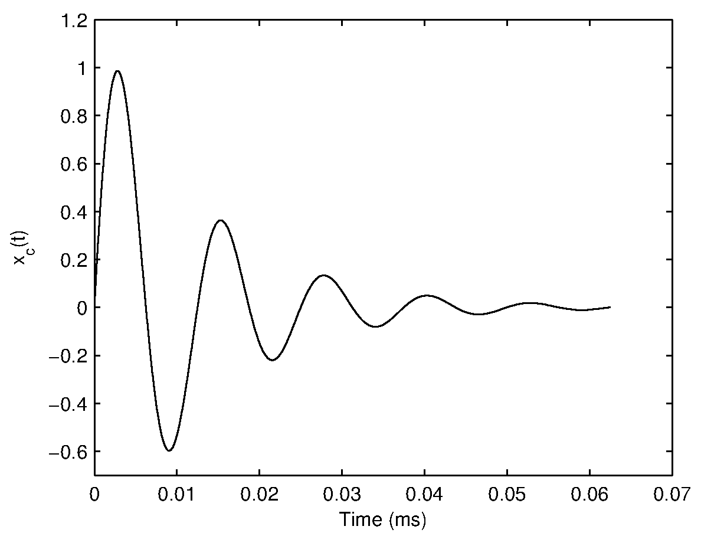
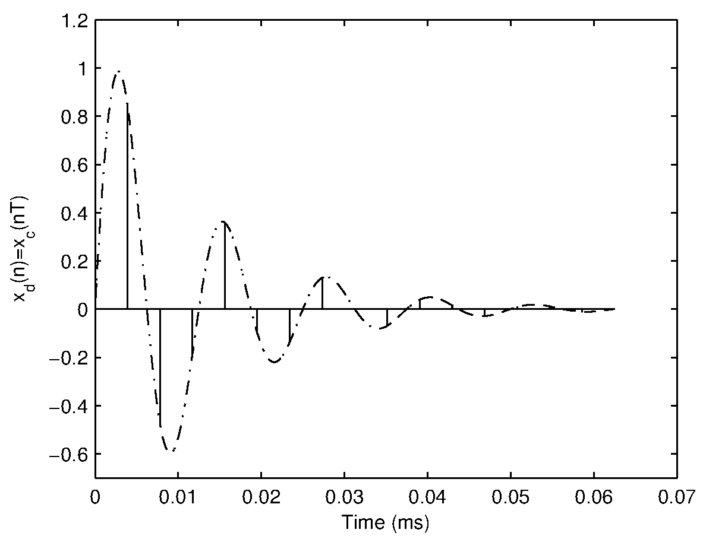
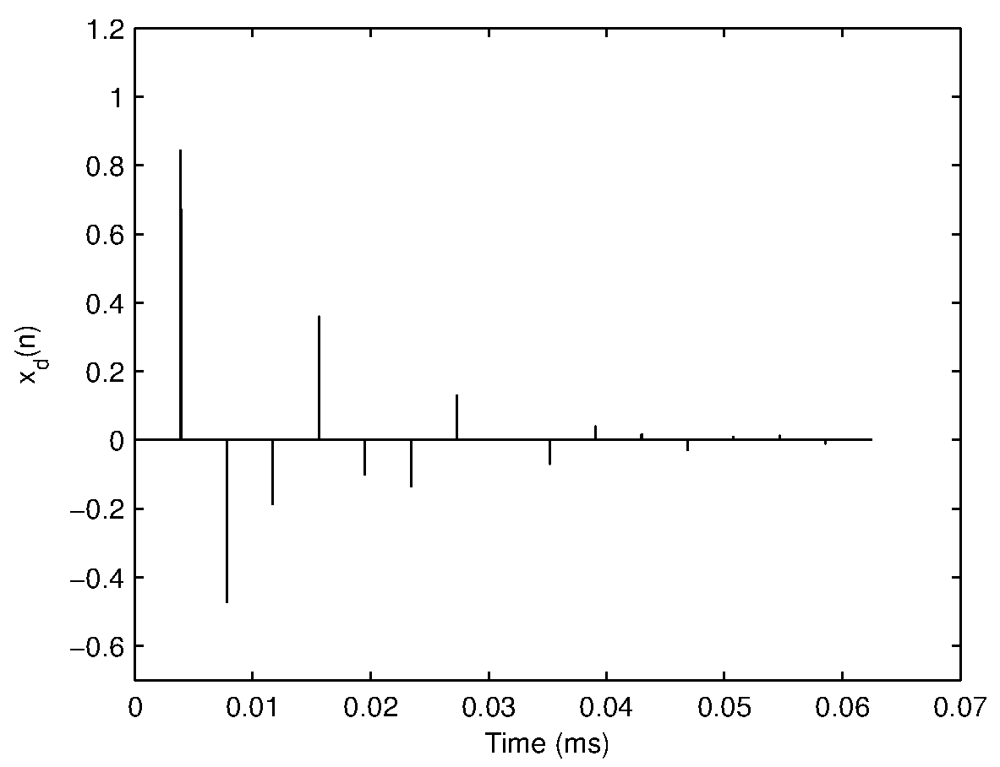
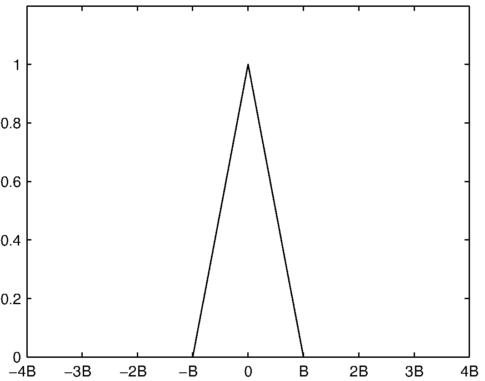
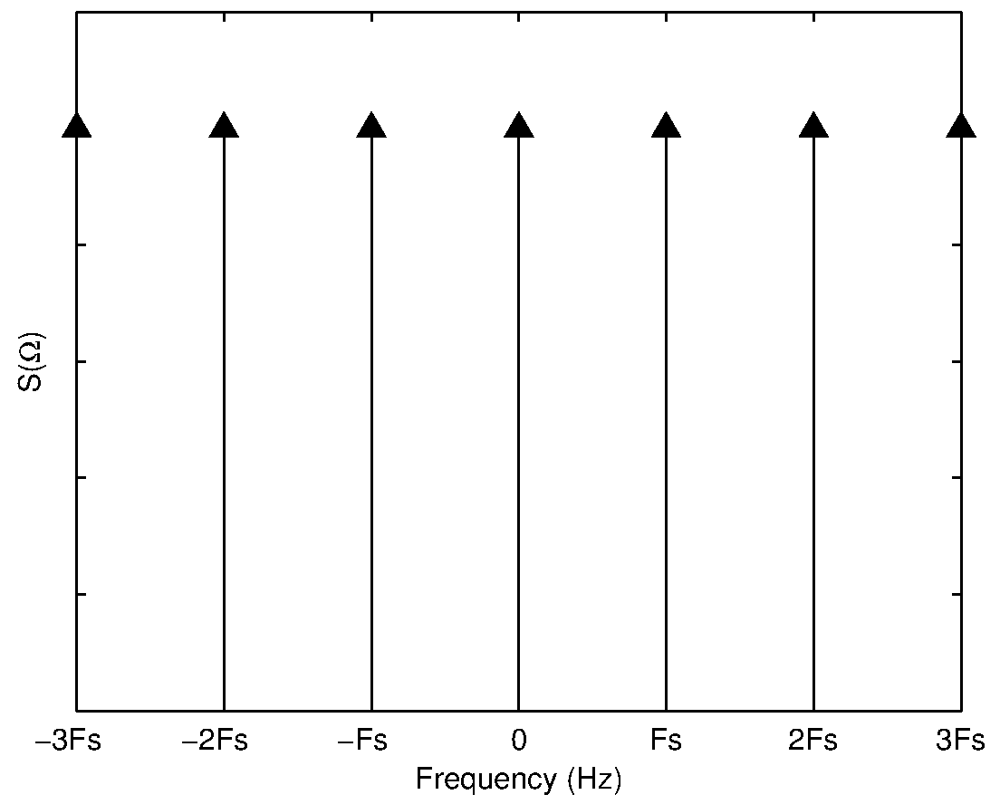
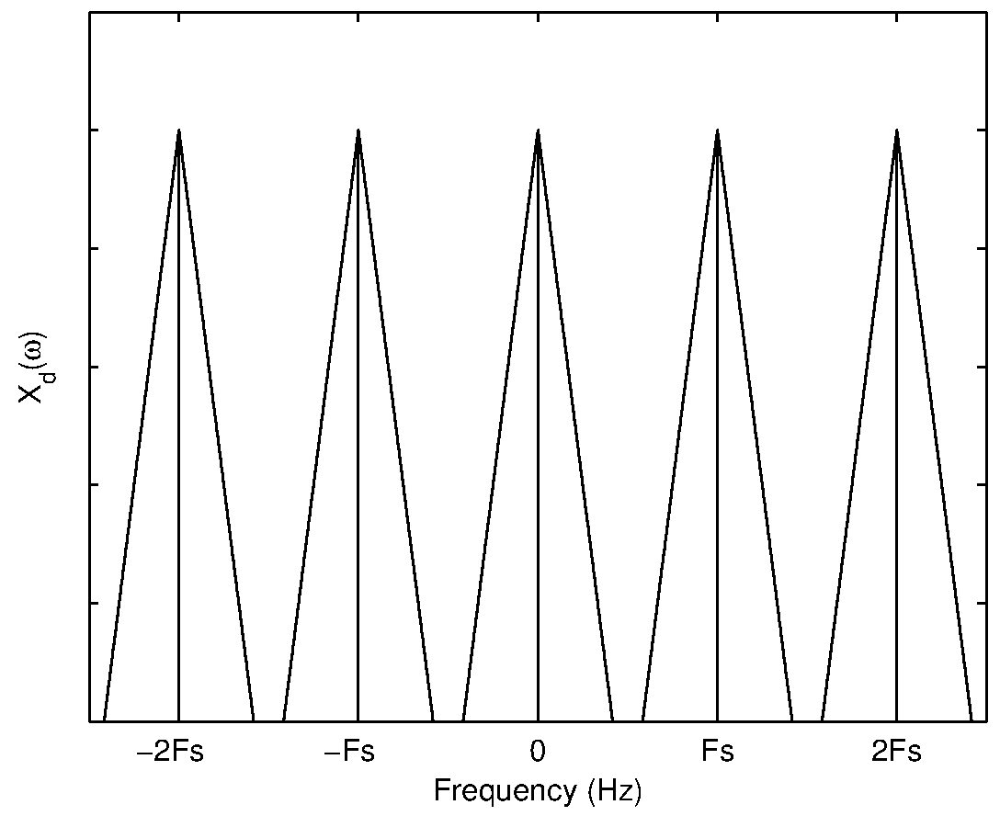

-
To study the effects of sampling (aliasing) and quantization on speech signals by playing them at different sampling rates and bits per sample (upto 1 bps).
To design a resonator by adjusting the poles in z-plane, and exciting it with an impulse and periodic impulse train.

Discretization of a continuous-time signal (sampling and aliasing)
Consider a continous-time signal \(x_c(t)\) whose Fourier transform is \(X_c(\Omega)\). Then $$ x_c(t)=\frac{1}{2\pi}\int\limits_{-\infty}^{\infty} X_c(\Omega) e^{j \Omega t} d\Omega \qquad(1)$$ and $$ X_c(\Omega)=\int\limits_{-\infty}^{\infty} x_c(t) e^{-j \Omega t} dt \qquad(2)$$ A discrete-time signal \(x_d(n)\) can be obtained by uniformly sampling the continuous-time signal \(x_c(t)\) at discrete intervals \(nT\) where T is called the sampling period and n is an integer. Consider a unit impulse function \(\delta(t)\), whose value is \(1\) at \(t=0\) and \(0\) elsewhere. Then the unit impulse sequence can be expressed as $$ s(t) = \sum\limits_{n=-\infty}^{\infty} \delta(t-nT), \qquad(3) $$ and \(x_d(n)\) can be expressed as \begin{eqnarray} x_d(n) & = & x_c(t) s(t) \qquad(4) \\ & = & x_c(t) \sum\limits_{n=-\infty}^{\infty} \delta(t-nT) \qquad(5)\\ & = & \sum\limits_{n=-\infty}^{\infty} x_c(nT) \delta(t-nT). \qquad(6) \end{eqnarray}
|  |

|
(a) |
(b) |
|  |  |
(c) |
(d) |
Figure 1 illustrates the process and effect of sampling a continuous-time signal in the time domain. In the frequency domain, the corresponding Fourier transform of \(x_d(n)\) can be obtained by convolving the individual Fourier transforms of \(x_c(t)\) and \(s(t)\). This is because multiplication of two sequences in the time domain is equivalent to convolution in the Fourier domain. Similarly multiplication in the Fourier domain is equivalent of convolution in the time domain.
To observe the effect of sampling in the frequency domain, we need to consider the Fourier Transform of \(s(t)\). Since \(s(t)\) is periodic with period T, using Fourier series expansion it can be shown that $$ s(t) = \frac{1}{T}\sum\limits_{k=-\infty}^{\infty} e^{-j k \Omega_s t}, \qquad(7) $$ where \(\Omega_s=\frac{2\pi}{T}\) is the sampling frequency.
Now the Fourier transform of \(s(t)\) may be computed as \begin{eqnarray} S(\Omega) & = & \int\limits_{-\infty}^{\infty} s(t) e^{-j \Omega t} dt \qquad(8)\\ & = & \int\limits_{-\infty}^{\infty} \frac{1}{T}\sum\limits_{k=-\infty}^{\infty} e^{-j k \Omega_s t} e^{-j \Omega t} dt \qquad(9)\\ & = & \frac{2\pi}{T} \sum\limits_{k=-\infty}^{\infty} \delta(\Omega - k \Omega_s). \qquad(10) \end{eqnarray}
Thus the Fourier transform of an impulse train with period \(T\) is another impulse train with period \(\Omega_s = \frac{2\pi}{T}\). To illustrate the effect of sampling in the frequency domain, consider some arbitrary Fouirer transform of a signal with bandwidth \(B\) shown in Figure 2(a). The Fourier transform of the impulse train sequence with period \(T\) is shown in Figure 2(b) where \(F_s=\frac{1}{T}\) denotes the sampling frequency. The corresponding discrete-time Fourier transform of the sampled signal is shown in Figure 2(c) for the case where \(F_s \gt 2B\). If the sampling frequency is reduced (\(F_s \lt 2B \)), the resultant discrete-time Fourier transform (shown in Figure 2(d)) clearly indicates the overlapping of spectral components. This effect is called aliasing and is due to an insufficient sampling rate. If the signal is sampled at a sampling frequency of \(F_s = 2B\), then no spectral distortion occurs as can be seen from (shown in Figure 3). Hence the minimum sampling frequency required to discretize a signal without aliasing is equivalent to twice the bandwidth of the signal. This frequency is referred to as the Nyquist rate.
|  |  |
(a) |
(b) |
|  |  |
(c) |
(d) |

|
Digitization of a discrete-time signal - Quantization and quantization error
A discrete-time signal obtained through sampling is still a continuous amplitude time sequence, where each sample value has an infinite precision. But digital computers are finite precision machines and hence there is a need to discretize and limit the range of sample values. This is achieved by quantization (more accurately scalar quantization). In the quantization process, each sampled value of a discrete-time signal is compared against a finite set of amplitude values and assigned a value in the set that is closest to the discrete-time value. The number of elements in the finite set is determined by the precision of the digital system. In an 8-bit system, there are \(2^8 =256\) elements in the set. The number of elements in the the finite set is referred as the number of quantization levels. If the difference in values of adjacent elements in the ordered set is constant, then the quantizer is referred as an uniform linear quantizer. Figure 4 shows the effect of quantizing a line using a 3-bit quantizer.

|
Since the digital signal is obtained by quantizing the continuous valued discrete-time signal, there is an error introduced in representation of the signal. If the discrete-time signal \(x_d(n)\) has a limited amplitude range i.e., \(|x_d(n)|\leq A_\mbox{max}\), the quantization step for a B-bit uniform quantizer is given by $$ Q_s = \frac{2A_{max}}{2^B} \qquad(11) $$ The maximum quantization error introduced by a B-bit uniform quantizer is given by \begin{eqnarray} Q_{e_{max}} & = & \frac{Q_s}{2} \qquad(12)\\ Q_{e_{max}} & = & \frac{A_\mbox{max}}{2^B} \qquad(13) \end{eqnarray} Hence the quantization error for each sample \(e(n)\) is defined as $$ e(n) = x_d(n)-x_D(n), \qquad(14) $$ where \(x_d(n)\) is the discrete-time infinite precision sampled value of the continuous-time signal \(x(t)\), and \(x_D(n)\) is the finite precision digitized (sampled and quantized) sample value. The quantization error at each sample lies within the range $$ -Q_{e_{max}} \leq e(n) \leq Q_{e_{max}}. \qquad (15) $$
Design of resonator
A resonator is an all-pole system. The transfer function of an all-pole system \(H(z)\) is given by $$ H(z) = \frac{1}{1+\sum^{N}_{k=1}{{a_k z^{-k}}}}, \qquad (16) $$ where \(\{a_k\}\)s denote the real coefficients of the denominator polynomial of order \(N\). Roots of the denominator polynomial in \(z^{-1}\) give real or complex poles. Real roots correspond to zero frequency or \(F_s/2\). Complex roots of a polynomial with real coefficients always occur in complex conjugate pairs corresponding to a frequency related to the angle of the complex root. Each pair of complex conjugate roots (or poles) corresponds to a second order polynomial which may be denoted as $$ H(z) = \frac{1}{(1-z_iz^{-1})(1-z_i^*z^{-1})} = \frac{1}{1+a_{i_1}z^{-1}+a_{i_2}z^{-2}}, \qquad (17)$$ where the complex root \(z_i\) is given by $$ z_i=r_i e^{j2\pi\frac{F_i}{F_s}}, \qquad (18) $$ where \(F_i\) denotes the resonance frequency of the second order system, and \(r_i\) corresponds to the resonance bandwidth \(B_i\) given by $$ r_i=e^{-\pi B_i T}, \qquad (19) $$ where \(T\) denotes the sampling interval. By using Eq. 18 and Eq. 19, Eq. 17 can be derived as $$ H_i(z) = \frac{1}{1 - 2 e^{(-\pi B_i T)} cos(2 \pi F_i T) z^{-1} + e^{(-2 \pi B_i T)} z^{-2}}, \qquad (20) $$ where \(F_s = \frac{1}{T}\) represents the sampling frequency.
For example, the magnitude response of an all-pole system \(H(z)\) with resonant frequency \(F_i\) = 1000 Hz,\(B_i\) = 100 Hz and \(F_s\) = 8000 Hz is shown in Figure 5. The impulse response is a samped sinusoidal signal. The damping depends on the bandwidth of the pole of the system.

|
Consider a train of impulse sequence, \(I(nT_0)\), with each impulse located at integer multiples of \(T_0\) (\(T_0 \gt\gt T\)) as shown in Figure 6. The output resonance of the system \(O(nT)\) is shown in Figure 7. The output signal is periodic with fundamental period (\(T_0\)) (from which the fundamental frequency is obtained as \(F_0 = \frac{1}{T_0}\)) is shown in Figure 7.

|

|

Part 1: Aliasing and quantization effect
1-A: Sampling and aliasing
Select one of the sample .wav files provided and click on the load button.
Click on the play button. Listen carefully to the quality of the signal, in terms of perceived background noise/distortion and clarity or intelligibility of the sounds/message.
Change the sampling frequency to 8000 Hz and listen to the utterance. Perceive the change in quality of speech between 16 kHz and 8 kHz, by repeatedly switching between 16 kHz and 8 kHz.
Listen to the utterance at 4 kHz, 2 kHz, and 1 kHz. Observe the degradation in quality as the sampling rate is reduced.
Repeat the experiment with the anti-aliasing flag checked. Do you perceive any change in distortion between with and without anti-aliasing? Why?
Repeat the experiment for a recording of your own voice.
1-B: Quantization effect
Select back the sampling frequency of 16 kHz. Anti-aliasing flag may be set to anything, as it is immaterial here.
Reduce the bits/sample value to 8 from 16. Listen and compare the utterances for the two different bits/sample values.
Reduce the bits/sample to 4, 2, and 1. Listen and compare the quality of speech as the bits/sample is reduced.
Note that the message is intelligible even at 1 bps though it is highly noisy.
Repeat the experiment for a recording of your own voice.
Part 2: Design of resonator
The sampling frequency \(F_s\) is fixed to 8000 Hz.
Choose the resonant frequency \(F_1\) between the values (0 to 1000 Hz) and bandwidth of resonator \(B_1\)
Choose the value of \(F_0 (\frac{1}{T_0})\), which corresponds to the impulse train excitation.
Study the effect of the choice of resonant frequency \(F_1\), bandwidth \(B_1\) and fundamental frequency \(F_0\)

Simulation is under construction.

The quality of speech is directly proportional to the number of quantization levels ( that is, number of bits used for quantization).Though quantization results in loss of information the human perception mechanism can still get the information present in the speech signal.
It is interesting to note that even with 1 bit/sample, most of the speech is intelligible. Hence we can conclude that significant information lies in the phase sequence of the signal, even if the amplitude information is destroyed.
The aliasing effect is perceived as distortions in the output signal. This is due to the effect of overlapping of frequency components.
As radius \(r_i\) (magnitude of pole) approaches to 1, the bandwidth decreases.
The increase in bandwidth results in more damping of the impulse response.

Explain why one can make out the message even with one bit quantization?
Write an algorithm for reducing the number of bits per sample (quantization levels) from a 16 bits to any given value say 8, 4, 2 or 1. (HINT: Assume that an "int floor(double)" function exists which takes in a float or double number and returns a integer part of the number.)
Show that the radius \( r \) of a pole in the \( z \)-plane is related to the bandwidth \( B \) by the expression $$ r = e^{-\pi B T}, $$ where \( T \) is the sampling interval.
Using the result \( r = e^{-\pi B T} \), show that the transfer function of a resonator with a pair of complex conjugate poles is given by $$ H(z) = \frac{1}{1-2e^{-\pi B_1 T}\cos{(2\pi F_1 T)} z^{-1} + e^{-2\pi B_1 T} z^{-2} },$$ where \( F_1 \) is the frequency of the resonator, \( B_1 \) is the bandwidth of the resonator, \( r \) is the radius of the pole in the \( z \)-plane, and \( T \) is the sampling interval.

Digital Processing of Speech Signals, L.R. Rabiner and R.W. Schafer, Chapter 2
Digital Processing of Speech Signals, L.R. Rabiner and R.W. Schafer, Chapter 5